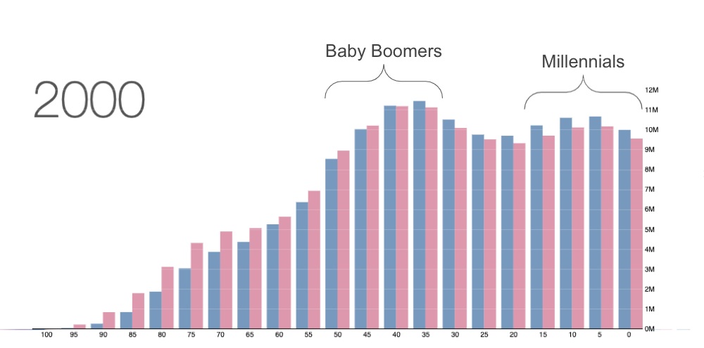

In the 2000's the United States had a very favorable demographic structure. A large young and middle-aged population results in a strong consumer base, with many young adults taking out credit to purchase homes and other assets. A large ratio of working citizens relative to retired citizens puts little strain on the social safety net and public retirement programs.
In many countries around the world, including the United States, we can visually see the Baby Boomer generation in the population distribution. This cohort is generally defined as people born from 1946 to 1964, during the post-world War II baby boom. Additionally, the Millenial generation which is largely the children of the Baby Boomers can be seen as a population boom aftershock. However, as we'll see, this was not the case for other nations.
